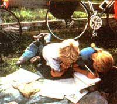

Education EN ROUT: Basic orienteering skills of compass reading map work and mileage computation supplied a mathematics curriculum. for history and English ""classes""we visited famous sites (like Kitty Hawk, Williams burg, and Carl Sandburg's home) and learned from the excellent books and pamphlets at these places.